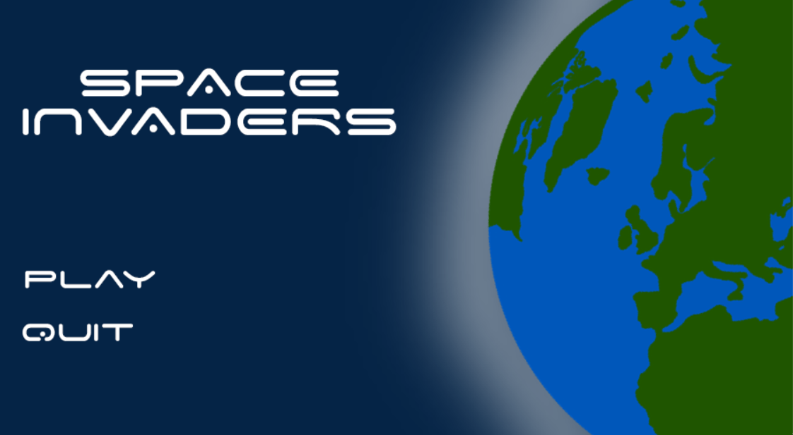

|
space-invader-tp
|
|
space-invader-tp
|
Jeu réalisé dans le cadre du cours de méthodologie de la programmation niveau 2 à l'Université de Lorraine.

Le but du jeu est de finir le niveau le plus rapidement possible, vous pouvez vous déplacer (Z, Q, ,S, D), tirer sur les météorite avec espace.
Pour installer le jeu, il suffit de cloner le dépôt git et d'ecrire make dans le terminal puis lancer ./space_invaders.
Pour générer la documentation, il suffit d'écrire make doc dans le terminal. Si ca marque 'doc' is up to date, il faut lancer make -B doc
La map est générée aléatoirement grace à un bruit de perlin qui nous permet de faire une carte qui se ressemble mais qui est toujours differente. Pour générer une map, il faut lancer make map dans le terminal. En ce qui concerne les paramètres du bruit de perlin, on les a choisi en faisant des tests sur le logiciel de FastNoiseLite. On utilise une librairie qui s'appelle FastNoiseLite pour générer la map. On peut modifier la taille de la map dans le fichier const.c (ligne 55). Attention de bien make map et make avant de relancer le jeu.
Le vaisseau se déplace de gauche à droite. Il peut se déplacer en restant appuyé D (droite) ou Q (gauche). On peut aussi accélérer le vaisseau en appuyant sur Z et ralentir en appuyant sur S.

Nous avons crée un sytème n'animation animate qui permet de crée des animations grace à plusieur image qui s'affiche les unes après les autres.

Les scores sont sauvegarder dans un fichier txt, ils sont écrit à chaque fin de jeu et on peut voir les meilleurs à la fin du jeu.
Pour le menu et l'écran de fin nous avons fait deux modules qui fonctionne comme le main mais qui sont plus simple. Nous avons fait un menu qui permet de choisir entre jouer et quitter. Nous avons aussi fait un écran de fin qui permet de rejouer ou de quitter, on peut aussi voir les meilleurs scores.

Nous pouvons tirer plusieur projectiles d'un coup mais il y a un cooldown qui permet de ne pas tirer trop de projectiles en même temps. Les projectiles sont détruit quand ils touchent un ennemi ou quand ils sortent de la map. Il y'a aussi une legere variation de droite à gauche pour donner un effet de distortion.

Nous avons ajouté des sons pour les tirs et les clics. Nous avons aussi ajouté de la musique de fond. Pour régler le volume de la musique de fond, il faut modifier la variable MUSIC_VOLUME pour la musique ou SOUND_VOLUME pour les sons dans le fichier const.c (ligne 65 et 70).
Une très grande partie du code a été testé pour lancer les tests, il faut lancer make test dans le terminal.
Ce projet a été réalisé par Matthieu Gaudel et Gabin Colin, étudiants en L1 Informatique à l'Université de Lorraine.